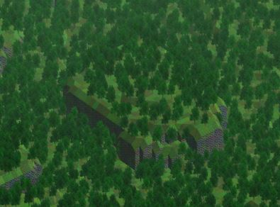
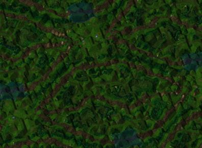
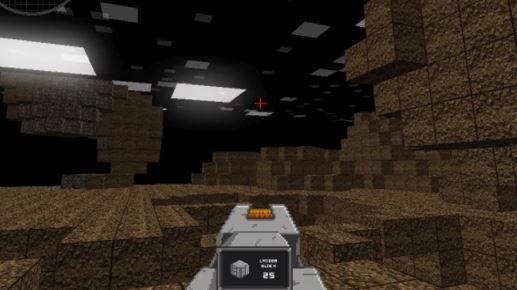

History of Minecraft
Swedish coder Markus 'Notch' Persson was a game developer working at King Digital Entertainment or King. After helping develop sandbox MMO Wurm Online, a game where you can conquer kingdoms and hunt dragons. Players had a total freedom of choice. He began working on his new personal project, “RubyDung”. It was an unreleased strategy, base-building game influenced by Dwarf Fortress. It was canceled early in development. The name "RubyDung" was short for "dungeon game in the rubylands”. He thought the graphics of the game was subpar, since it was too blurry and distorted.
Two of the only pictures of RubyDung.
 Fun Fact: The Grass and Cobblestone textures that were used in RubyDung were later used in Minecraft.
Notch then came across Infiniminer. Made by Zachtronics, Infiniminer was the inspiration for Minecraft's blocky structure. Infiniminer is a game where you dig blocks and minerals, then assembling it into new items. He took this idea and added it to RubyDung, hence creating the very first version of Minecraft.
Zachtonics' Infiniminer
Minecraft is based on RubyDung’s codebase and Infiniminer’s block and craft structure. He redid and improved the graphics. He made it adventure based and added a blue sky. In May 2009, he released the earliest version of the game, pre-alpha build named “Minecraft: Classic”. That was the start of game that has changed the lives of many children and is considered as one of the best games in the world.